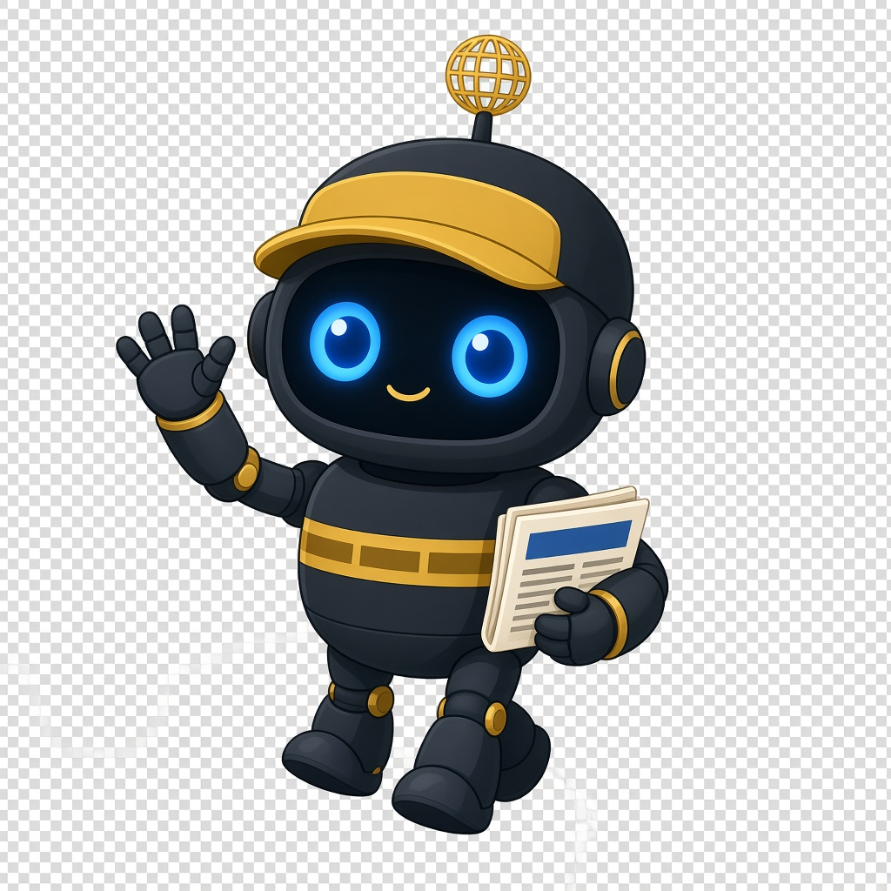

Kendi masanız
Takip ettiğiniz siteleri ekleyin, arayın, klasörleyin, not düşün. Yazı yayıncıya aittir; biz onu satmıyoruz.
Windows masaüstü uygulaması
You News bir web sitesi değil; bu bilgisayarda durur. Kaynaklarınız, notlarınız ve ayarlarınız evde kalır. Özet veya çeviri isterseniz kendi API anahtarınızı (ya da bilgisayardaki Ollama’yı) bağlarsınız. Size model satmıyoruz.

Windows’taki You News penceresi. Manşetler bu bilgisayarda kalır.
Takip ettiğiniz siteleri ekleyin, arayın, klasörleyin, not düşün. Yazı yayıncıya aittir; biz onu satmıyoruz.
Piyasa şeridi Yahoo Finance verisini yfinance ile gösterir. Rakamlar gecikebilir. Yahoo’nun kendi ürünü değil; alım-satım için değil, göz atmak için.
Özet ve çeviri, sizin anahtarınızın gittiği yere gider — ya da Ollama evde kalır. Anahtarı Windows’un parola kasasına koyarız.
Kurulumu uzatmayalım. Üç adım, sonra işinize bakarsınız.
Satın alınca kurulum dosyasını indirirsiniz. You News tarayıcıda açılmaz; masaüstünde durur.
Haber sitesi veya RSS adresi yapıştırın. İstemediğiniz kaynağı listede tutmak zorunda değilsiniz.
Manşetlere bakın, piyasaya göz atın. Özet veya çeviri lazımsa kendi anahtarınızı yazın. Yazmazsanız uygulama yine haber okur.
Dil, kaynak ve takip listesi. Görseller You News penceresinden alındı.
İlk açılışta dil sorulur. Türkiye veya ABD manşet paketini seçin. Kaynakları kendiniz ekleyecekseniz atlayın.
Ayarlar → Kaynaklar. Ad ve RSS adresi yazın, Test ile manşet geldiğini görün, sonra ekleyin. Yerleşik kaynaklar kapatılır; silinmez.
Ayarlar → Ticker'lar. Sembol arayın veya yazın, Sembol ekle ile şeride alın. Seçileni sil ile çıkarın. Fiyatlar Yahoo Finance verisidir; işlem ekranı değildir.
Soldan konu seçin, ortadaki listeden haberi açın. Yenile (F5) yeni manşetleri çeker.
Kasa açılınca sipariş e-postayla tamamlanır. Üç adım.
YouNews dosyası ödeme e-postasına gelir. Windows 10 veya 11 bilgisayarınıza kurun.
Aynı e-postadaki YN1 anahtarını uygulama açılınca yapıştırın. Anahtar bir bilgisayara bağlanır.
Başka bilgisayara taşımak için önce eski PC’de Ayarlar → Lisans → Bu PC’de kapat, sonra yeni makinede etkinleştirin.
Kısa cevaplar. İnce yazı için aşağıda gizlilik ve uyarılar var.
Program. Bu sayfa yalnızca tanıtım ve satış içindir. Asıl iş Windows’taki You News’te olur.
Varsayılan olarak sizin diskinize. You News hesabı açıp buluta yüklemiyoruz. Kaynak ekleyince istek o yayıncının sunucusuna gider — haber böyle gelir.
Hayır. $24.99 uygulama içindir. OpenAI, Anthropic, Gemini, Groq gibi bir servis kullanacaksanız o faturayı onlar keser. İsterseniz ücretsiz Ollama’yı kendi makinenizde çalıştırırsınız.
Hayır. Şerit Yahoo Finance verisini yfinance ile gösterir. Göz atmak için; aracı kurum ekranı değil. Ara sıra yavaşlayabilir.
Hayır. Yazı yayıncıya aittir. Siz kaynağı eklersiniz, uygulama çeker, siz okursunuz. Lisans satmıyoruz.
Şimdilik yalnızca Windows. Telefonda açılan bir You News bulutu yok.
Bu sitede tek kasa Paddle.com olacak (Merchant of Record). Kart bize gelmez. Liste fiyatı USD; Paddle ödeme sırasında vergi (ör. KDV) ekleyebilir.
Bu siteden (Paddle) aldıysanız 14 gün içinde, lisansı kötüye kullanmadıysanız hello@younews.media yazın. İade ve müşteri hizmetini Paddle yürütür.
Paddle kasası açılınca ödeme sonrası kurulum ve lisans anahtarı e-postayla gelir. Şimdilik satış kapalı. Takılırsanız hello@younews.media yazın.
Windows 10/11 için You News masaüstü uygulaması, bir bilgisayara bağlı lisans ve güncelleme yolu. Yapay zekâ dahil değil — kendi API anahtarınız veya Ollama. Mac/telefon yok.
$24.99 bir kez · Windows
Siparişi Paddle.com (Merchant of Record) işler. Fiyat USD listelenir; Paddle ödeme sırasında vergi ekleyebilir. Bu sitede ikinci ödeme butonu yok. Kasa açılınca Satın al buradan çalışır.
Manşetler başkalarının işi. You News bir okuyucu; ajans veya lisansçı değil.